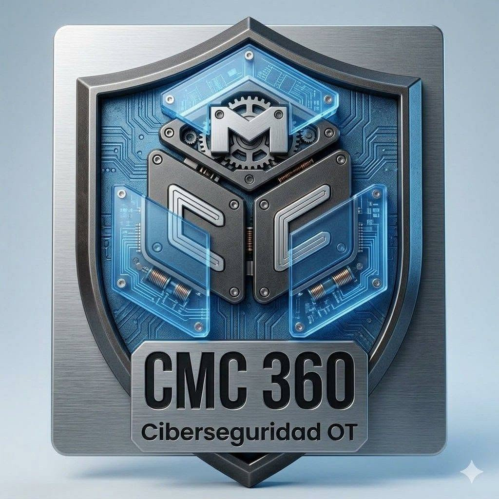
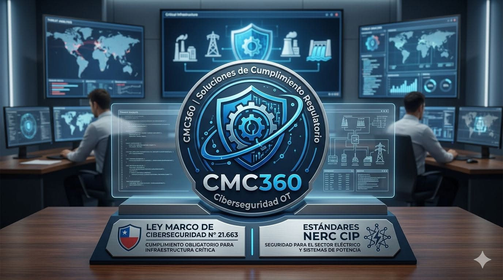

⌕
ASSESSMENT OT
Evaluamos su entorno OT identificando brechas de ciberseguridad, vulnerabilidades y cumplimiento normativo.
Ver más →Evaluamos, protegemos y gestionamos los riesgos de ciberseguridad en ambientes de Tecnología Operacional, asegurando la continuidad de sus procesos industriales.
En CMC360 entregamos soluciones y servicios especializados en ciberseguridad para ambientes de Tecnología Operacional (OT), ayudando a las organizaciones a gestionar riesgos, cumplir normativas y asegurar la continuidad de sus operaciones críticas.
Combinamos experiencia, metodologías probadas y tecnología de clase mundial para entregar resultados medibles y sostenibles.
Entendemos los entornos industriales y sus desafíos únicos de ciberseguridad.
Equipos certificados con amplia experiencia en proyectos OT en diversos sectores industriales.
Aplicamos marcos y buenas prácticas internacionales adaptadas a su realidad operacional.
Entregamos valor tangible mediante una gestión continua de riesgos y mejora constante.

Evaluamos, protegemos y gestionamos los riesgos de ciberseguridad en ambientes OT, asegurando la continuidad y resiliencia de sus operaciones industriales.
Evaluamos su entorno OT identificando brechas de ciberseguridad, vulnerabilidades y cumplimiento normativo.
Ver más →Identificamos y clasificamos sus activos industriales para lograr visibilidad y control de su entorno OT.
Ver más →Detectamos, evaluamos y priorizamos vulnerabilidades para reducir riesgos y fortalecer su operación.
Ver más →Evaluamos el cumplimiento de normativas y frameworks aplicables a su industria y gestionamos las brechas.
Ver más →Generamos mapas de riesgo y niveles de cumplimiento para una toma de decisiones estratégica.
Ver más →Apoyamos la gestión de ciberseguridad, riesgos, cumplimiento y continuidad de su organización.
Ver más →Diseñamos e implementamos infraestructura segura y resiliente para garantizar la continuidad operacional.
Ver más →Ofrecemos soluciones personalizadas para sus necesidades específicas de ciberseguridad OT.
Ver más →Integramos soluciones tecnológicas de clase mundial que permiten fortalecer la seguridad, visibilidad y resiliencia de sus operaciones.
Solución de Zero Trust centrada en la gestión de identidades y accesos privilegiados (PAM), protegiendo activos críticos y la continuidad operativa sin alterar los procesos industriales.

Plataforma de software industrial que actúa como Gateway de IoT Industrial (IIoT) y Edge Computing, conectando sistemas OT con sistemas TI y plataformas en la nube.
Arquitectura integral de Zero Trust Industrial para entornos OT, orientada a asegurar la continuidad operativa y prevenir amenazas en tiempo real.
Solución para la gestión de mapas de riesgo en tiempo real, basada en normativas y frameworks, con evidencia, alarmas, IA, inventarios y vulnerabilidades OT.
Plataforma base para soluciones de mapas de riesgos, Compliance y Frameworks, con módulos propios orientados al cumplimiento BIA.
Acompañamos a las organizaciones en la identificación de brechas, evaluación de riesgos y cumplimiento de normativas y estándares de ciberseguridad aplicables a sus ambientes OT.

Trabajamos bajo los principales marcos regulatorios y estándares internacionales para asegurar el cumplimiento en los entornos de Tecnología Operacional.
Realizamos evaluaciones en terreno para conocer la realidad del proceso, planta, faena, obra o área industrial. La mayoría de nuestros assessments OT se realizan de forma presencial.
Contáctanos y te ayudaremos a evaluar riesgos, brechas y cumplimiento normativo.
Proyectos y experiencias orientadas a fortalecer la seguridad, gestión de riesgos y continuidad de operaciones críticas.
Auditorías especializadas y proyectos ejecutados en diversos sectores industriales.
Ver casos →Hablemos sobre cómo podemos ayudarte a proteger y asegurar la continuidad de tus operaciones críticas.
Estamos disponibles para conocer tus necesidades y ayudarte a fortalecer la seguridad y continuidad de tus operaciones críticas.
Te ayudamos a identificar riesgos y fortalecer la protección de tus sistemas industriales.